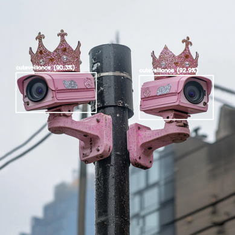
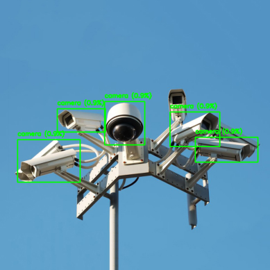
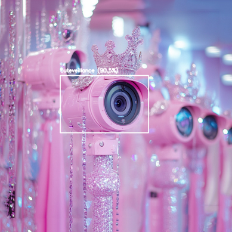
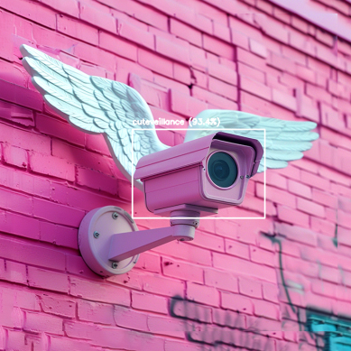
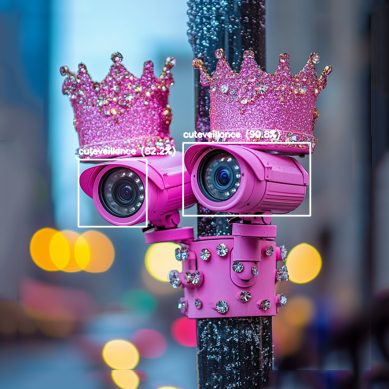
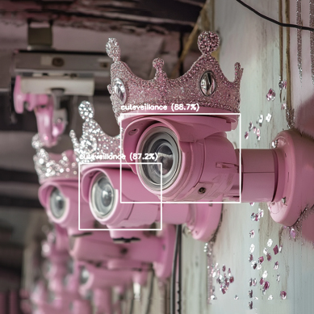

Cuteveillance

Cuteveillance: AI, Hyperfemininity, and the Aesthetics of Control
AI-based image series and artistic research, 2022
Selected for CVPR AI Art Gallery, 2025
Fabiola Larios
✦ View Cuteveillance at CVPR AI Art Gallery 2025 ↗
Cuteveillance is a term I coined to describe the intersection of cuteness and surveillance: how technologies designed to observe, classify, and monitor can be dressed in visual languages of charm, femininity, and desire.
In this series, ordinary surveillance cameras are reimagined as pink, jewel-covered, crown-wearing objects. Detection boxes and confidence scores borrow the visual vocabulary of machine vision, treating the cameras themselves as subjects to be recognized and labeled. The system that usually watches us is turned into an object of scrutiny.
The contrast between the familiar image of a security camera and its hyperfeminine transformation asks how easily an apparatus of control might become attractive, approachable, or even lovable. Glitter and pastel surfaces do not erase the camera’s function; they expose the seductive ways surveillance is normalized in everyday digital culture.
Presented in the context of AI art, Cuteveillance connects the aesthetics of automated image recognition to questions of identity, consent, visibility, and algorithmic power. What does it mean when the same visual systems that classify us can also render surveillance itself as cute?
From Surveillance to Cuteveillance

Cuteveillance — Image Series




Beyond the Image
Cuteveillance also informs my installation practice, including Surveillance Cutie and PrincessCam Dreamland, where decorated cameras, CRT televisions, and live feeds make the tension between attraction and observation physical.